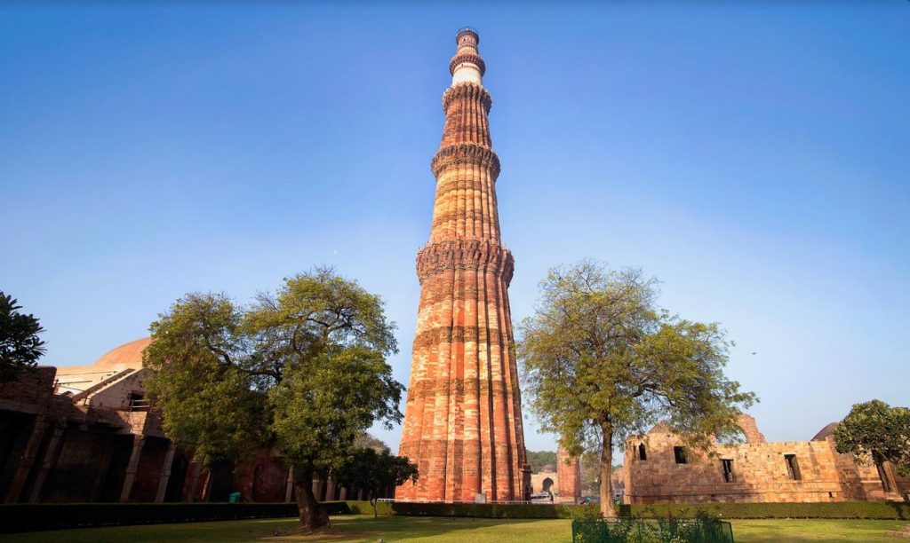
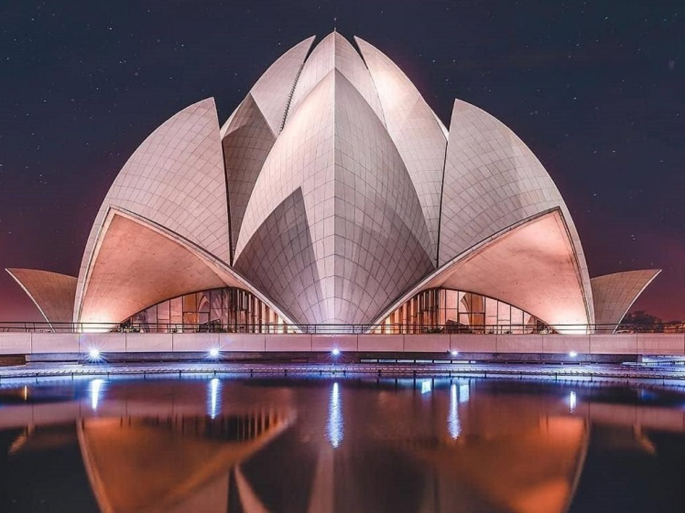
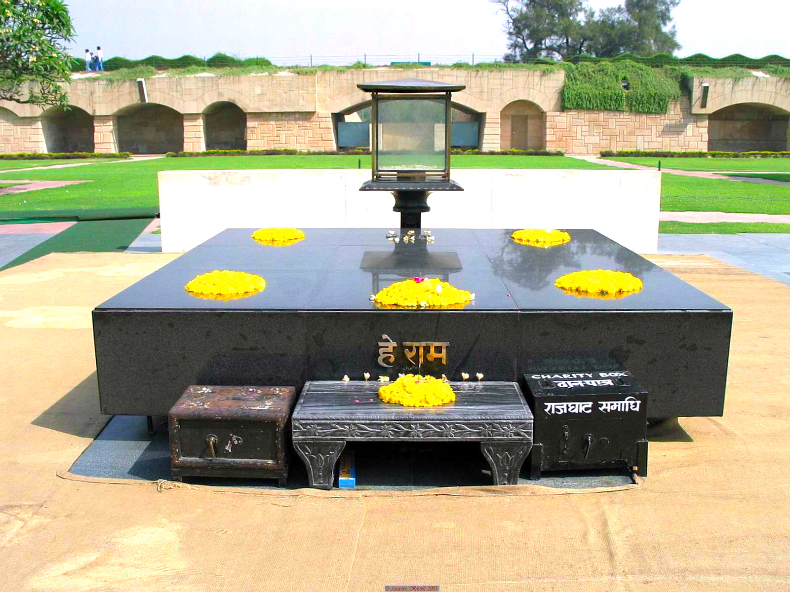

Insearch Outdoors
Home
(current)
About Us
Tours
Wildlife
Local Treks
Birding
Gallery
Register
Login
Search
Best Locations in Delhi
India Gate
#1 in Best Places to Visit in Delhi
The India Gate (formerly known as the All India War Memorial) is a war memorial located astride the Rajpath, on the eastern edge of the "ceremonial axis" of New Delhi, formerly called Kingsway. It stands as a memorial to 70,000 soldiers of the British Indian Army who died in between 1914 and 1921 in the First World War, in France, Flanders, Mesopotamia, Persia, East Africa, Gallipoli and elsewhere in the Near and the Far East, and the third Anglo-Afghan War. 13,300 servicemen's names, including some soldiers and officers from the United Kingdom, are inscribed on the gate. Designed by Sir Edwin Lutyens, the gate evokes the architectural style of the triumphal arch such as the Arch of Constantine, in Rome, and is often compared to the Arc de Triomphe in Paris, and the Gateway of India in Mumbai. Following the Bangladesh Liberation war in 1972, a structure consisting of a black marble plinth with a reversed rifle, capped by a war helmet and bounded by four eternal flames, was built beneath the archway. This structure, called Amar Jawan Jyoti (Flame of the Immortal Soldier), has since 1971 served as India's tomb of the unknown soldier. India Gate is counted amongst the largest war memorials in India and every Republic Day, the Prime Minister visits the gate to pay their tributes to the Amar Jawan Jyoti, following which the Republic Day parade starts. The memorial-gate is also a popular spot for protests by the civil society in New Delhi.

Qutub Minar
#2 in Best Places to Visit in Delhi
The Qutb Minar, also spelled as Qutub Minar and Qutab Minar, is a minaret and "victory tower" that forms part of the Qutb complex, a UNESCO World Heritage Site in the Mehrauli area of New Delhi, India. The height of Qutb Minar is 72.5 meters, making it the tallest minaret in the world built of bricks. The tower tapers, and has a 14.3 metres (47 feet) base diameter, reducing to 2.7 metres (9 feet) at the top of the peak. It contains a spiral staircase of 379 steps. Parso-Arabic and Nagari in different sections of the Qutb Minar reveal the history of its construction, and the later restorations and repairs by Firoz Shah Tughluq (1351–88) and Sikandar Lodi (1489–1517). It has five superposed storeys. The lowest three comprise fluted cylindrical shafts or columns of pale red sandstone, separated by flanges and by storeyed balconies, carried on Muqarnas corbels. The fourth column is of marble, and is relatively plain. The fifth is of marble and sandstone. The flanges are a darker red sandstone throughout, and are engraved with Quranic texts and decorative elements. The whole tower contains a spiral staircase of 379 steps. At the foot of the tower is the Quwat ul Islam Mosque. The Minar tilts just over 65 cm from the vertical, which is considered to be within safe limits. Quotations from the Quran are inscribed on the walls of the monument. Qutb Minar was an inspiration and prototype for many minarets and towers built. The Chand Minar and Mini Qutub Minar bear resemblance to the Qutb Minar and inspired from it.

Bahai (Lotus) Temple
#3 in Best Places to Visit in Delhi
The Lotus Temple was consecrated and opened to the public in December 1986. It was designed by Iranian architect Fariborz Sahba, who won acclaim for the project even before the temple was completed. It subsequently received several awards. The Lotus Temple derives its name from its design. Like every other Bahāʾī mashriq, it is characterized by a nine-sided construction, in keeping with the Bahāʾī belief in the mystical properties of the number nine. Set on an elevated plinth in a 26-acre (10.5-hectare) expanse of landscaped gardens and surrounded by nine pools bordered by red sandstone walkways, the white marble edifice rises to a height of more than 130 feet (40 metres). The temple complex comprises 27 independent marble “petals,” which are clustered into groups of three to form nine sides (through which open nine entrances into a central space) and into groups of nine to form three concentric rings. Petals in the first ring face outward, forming canopies over the nine entrances. The second ring covers the outer hall. In the innermost ring, the petals curve inward to partially enclose the central prayer hall, which accommodates about 2,500 people. The top of the structure appears open but actually contains a glass-and-steel roof that admits natural daylight. The overall effect is that of a floating lotus flower on the verge of blooming and surrounded by its leaves.

Raj Ghat
#4 in Best Places to Visit in Delhi
Raj Ghat is a memorial dedicated to Mahatma Gandhi in Delhi, India. Originally it was the name of a historic ghat of Old Delhi (Shahjahanabad). Close to it, and east of Daryaganj was Raj Ghat Gate of the walled city, opening at Raj Ghat to the west bank of the Yamuna River. Later the memorial area was also called Raj Ghat. It is a black marble platform that marks the spot of Mahatma Gandhi's cremation, Antyeshti (last rites) on 31 January 1948, a day after his assassination. It is left open to the sky while an eternal flame burns at one end. Located on Delhi's Ring Road, officially known as Mahatma Gandhi Road, a stone footpath flanked by lawns leads to the walled enclosure that houses the memorial. The materials used in the memorial, especially in the recesses, raise a few questions about the nature of Gandhian architecture in India. There is a difference between the architecture of Rajghat and a Gandhian low-cost housing architecture. Unlike the hard material faces of some portions of Rajghat, a Gandhian low-cost housing architecture has a decidedly perishable character. In this sense the event of the construction of the Raghat Memorial belongs within a more hard-modernist Gandhian architectural history in India, at a distinct remove from a Gandhian low-cost architectural history of perishable materials.